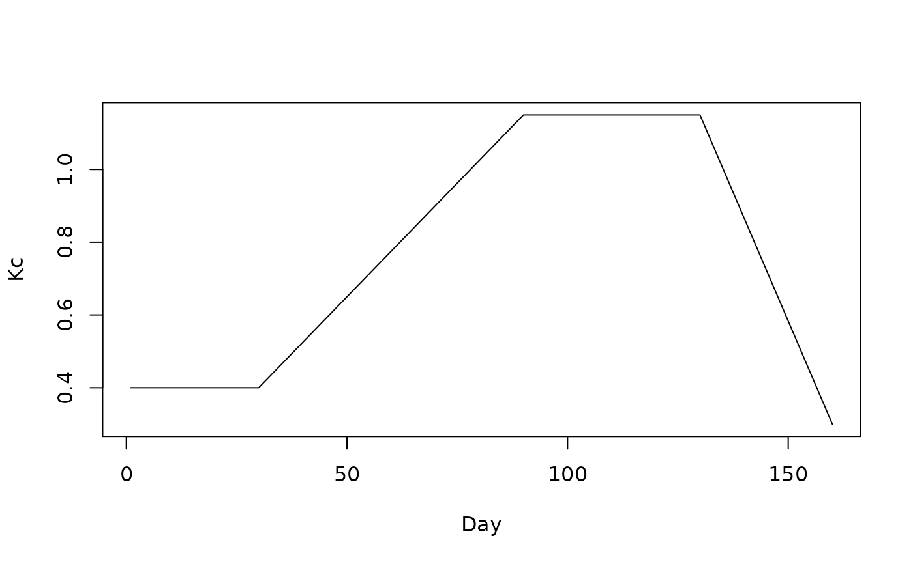

Generates a daily Kc curve based on the four-stage FAO-56 model: constant initial, linear development, constant mid-season, linear late.
Arguments
- kc_ini
Numeric. Kc during initial stage.
- kc_mid
Numeric. Kc during mid-season stage.
- kc_end
Numeric. Kc during end/late stage.
- l_ini
Integer. Initial stage length (days).
- l_dev
Integer. Development stage length (days).
- l_mid
Integer. Mid-season stage length (days).
- l_late
Integer. Late-season stage length (days).
Examples
kc <- wapor_build_kc(0.4, 1.15, 0.30, 30, 60, 40, 30)
plot(kc, type = "l", ylab = "Kc", xlab = "Day")
